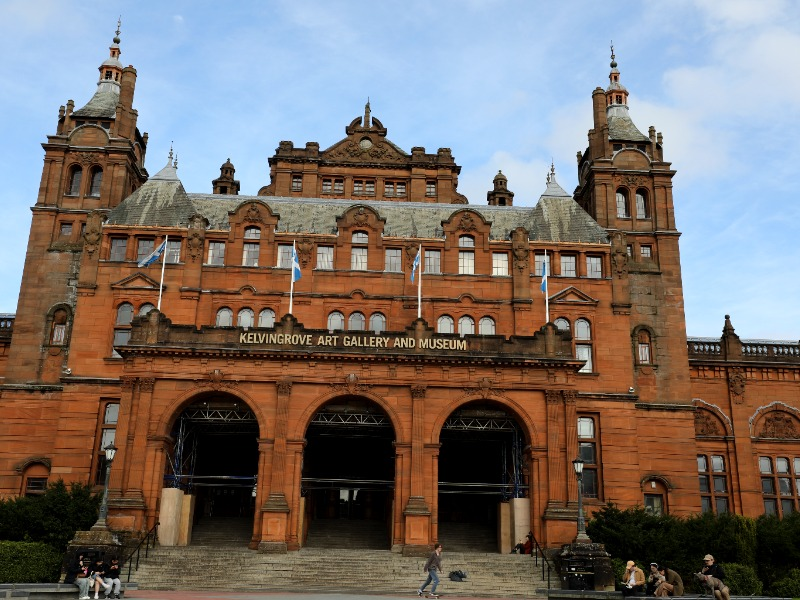
Kelvingrove Art Gallery & Museum
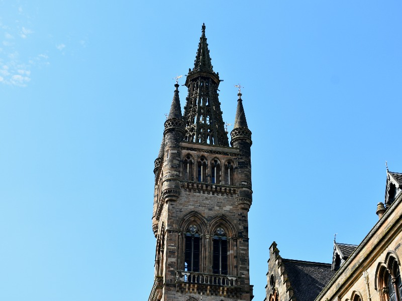
University of Glasgow
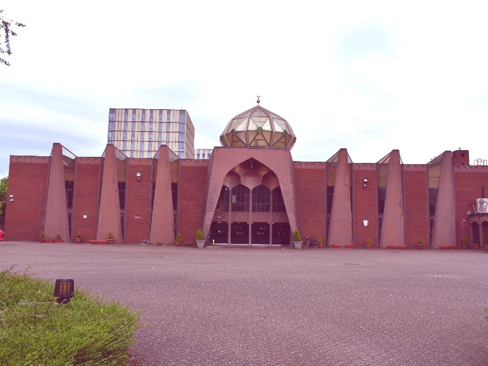
Glasgow Central Mosque
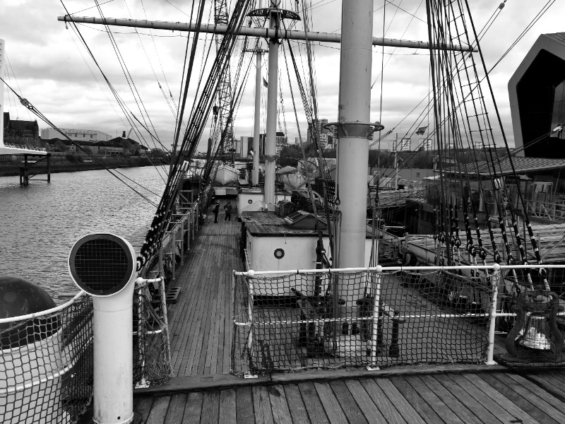
Glenlee Ship at Riverside Museum
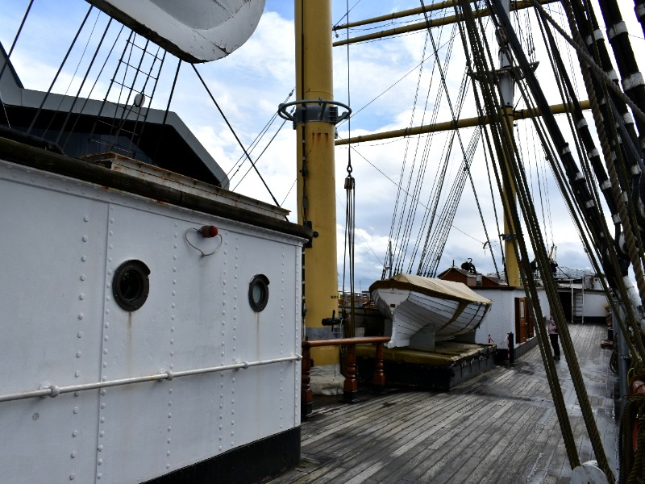
Glenlee Ship at Riverside Museum
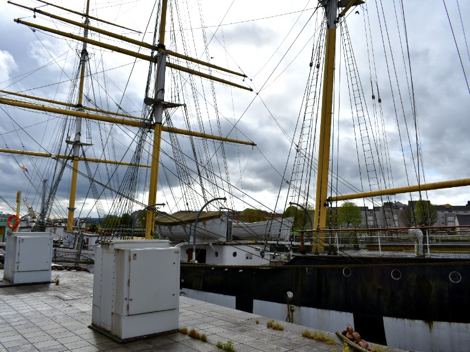
Glenlee Ship at Riverside Museum
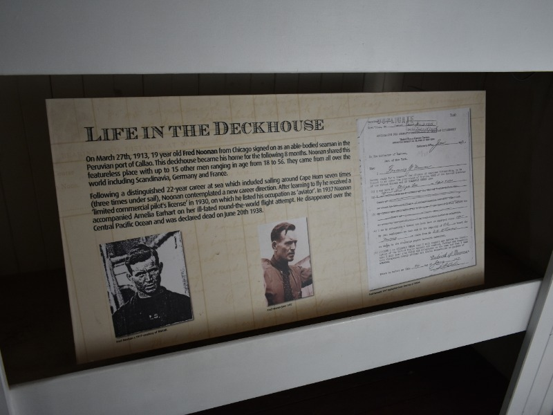
Life in the Deckhouse
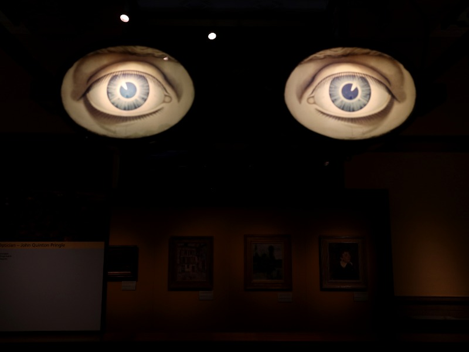
Eyes Kelvingrove Art Gallery
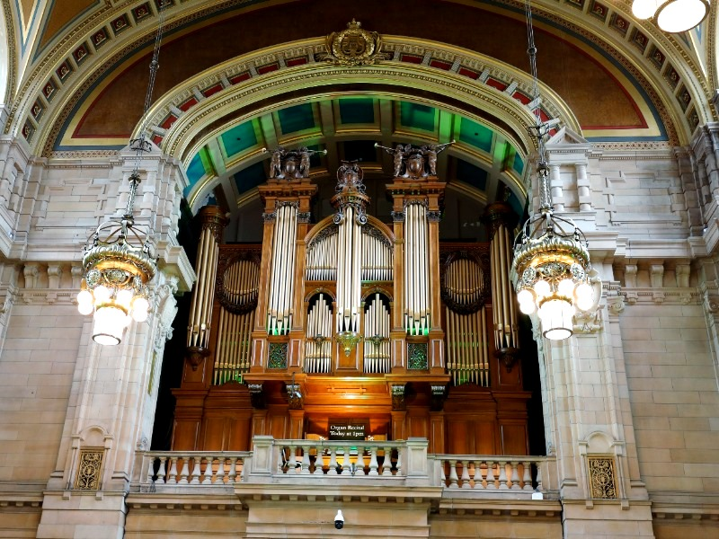
Organ Recital Kelvingrove Art Gallery
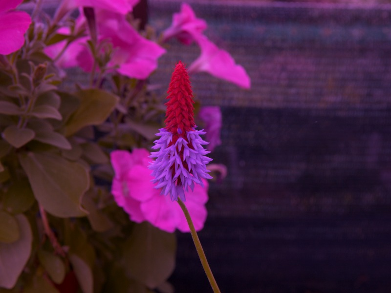
Red Violet Flower Botanic Gardens
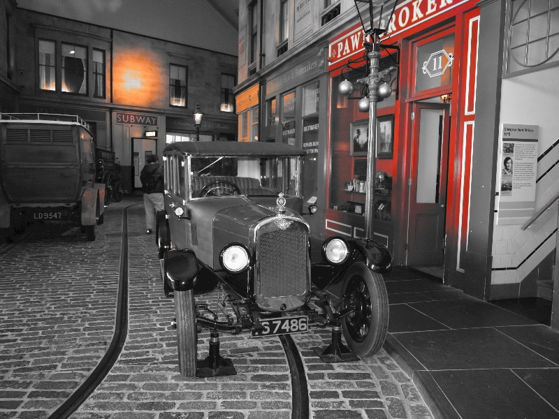
Vintage Car Riverside Museum